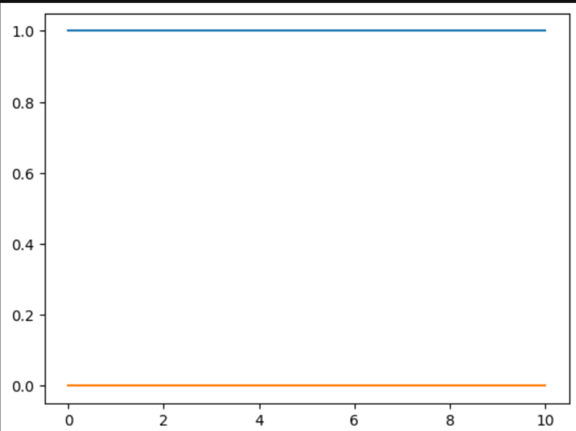

Código Ejemplo
Un ejemplo de como utilizar estas funciones es el siguiente:
Primero se debe definir un operador para la función que deseamos evaluar, en este caso usaremos:
oOper = np.array([[0, 1], [1, 0]])
También debemos definir un estado inicial para el sistema:
yInit = np.array([[1, 0], [0, 0]])
Con estos dos elementos definidos podemos utilizar la función dyn_generator para obtener f(t, y(t)), que en este caso nos daría la siguiente matriz:
[0.-0.j 0.+1.j]
[0.-1.j 0.-0.j]
Ahora es necesario definir otros elementos para evaluar el sistema, por ejemplo:
Se necesita crear un array que contiene los tiempos en los que se va a evaluar el sistema:
times = np.linspace(0,10,40)
Se debe crear una variable que contenga la información sobre el salto temporal de cada iteración:
h = times[1] - times[0]
Para este ejemplo nos interezan solamente las entradas 0,0 y 1,1 de la matriz que describe el estado del sistema, por lo que vamos a crear 2 arrays para almacenar estos datos conforme se itera sobre el sistema:
stateQuant00 = np.zeros(times.size)
stateQuant11 = np.zeros(times.size)
Finalmente, podemos crear el for loop que itera sobre el sistema para evaluar como cambia a través del tiempo:
for tt in range(times.size):
stateQuant00[tt] = yInit[0,0]
stateQuant11[tt] = yInit[1,1]
yN = rk4(dyn_generator, times[tt], yInit, h)
yInit = yN
Si graficamos los datos obtenidos obtenemos lo siguiente:
